Some hints about usage the web front end.
Language
The initial language is detected by the preferred browser language, but you overwrite this with 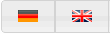
At the moment English and German are implemented.
If you are interested in translating into another language, give me a hint, but there are about 220 texts to translate...
Overview
In the overview you build your the channel hierarchy.
Before you can add a channel to the hierarchy, you to define them on the Channels view.
● Add channels on top level with
● Add sub channels to existing grouping channels with
●
Delete single channels with and grouping channels incl. childs with 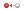
This removes these channels only from hierarchy!
●
Channels are always appended at bottom.
Rearrange them with
● To get an better overview, you can expand/collapse the whole hierarchy by 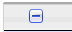
● If you collapse (/) certain knots, the state will be saved and restored on next view.
●
If you need the channel GUID for external use, just click on the channel name
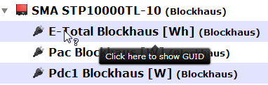
●
You can create new channels on Channels view with
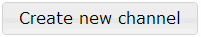
Here you have a sortable list of all your defined channels, initially sorted by channel type.
You can:
● Edit a channel with
● Clone a channel with 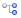 , it presents the "Add channel" form filled out with the attributes of the template.
●
Delete a channel with 
This only works, if the channel is not assigned in channel hierarchy!
ATTENTION
If you delete a channel, ALL readings will be cleared from database forever (unless you have a backup :-)!
Charts
Charts view starts plain until you mark channels for charting.
●
Mark some channels
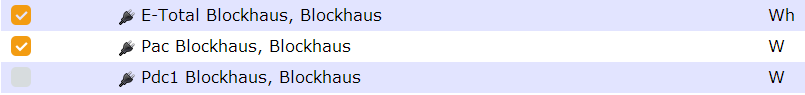
and consider the units you combine!
●
Customize the series with
Please note: Put different units to different axis!
You need so much axes, as you have different units! (see Examples)
● If you're done click "Refresh" 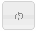
●
Move the displayed time range backward / forward with the arrows
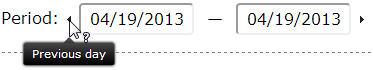
The inputs are linked, a click will change them both. The chart will be refreshed automatic!
● To collapse all not selected channels, click 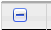
●
If you're fine with your selection and settings, save this chart variant for later
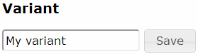
●
You can Load it back, if you made changes or Delete it, if it is obsolete.
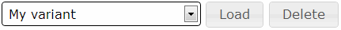
●
For fast access to a defined variant you can save a bookmark from 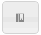
This button will always link to the selected variant in the variant drop down!
●
If you like to use your chart somewhere else, you can get / extract it
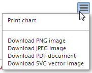
Information
The most important information is your API key for data storing requests.
Keep it secret to avoid unwanted data manipulation!
If you afraid, your key was compromised, you generate a new one on here.
Please note: If you generate a new API key, don't forget to update any place, where the API key is used for data storage, e.g. in your script configuration in bin/PVLng.conf
On this view you can see also some stats about your stored data.
Created with the Personal Edition of HelpNDoc: Free EPub and documentation generator